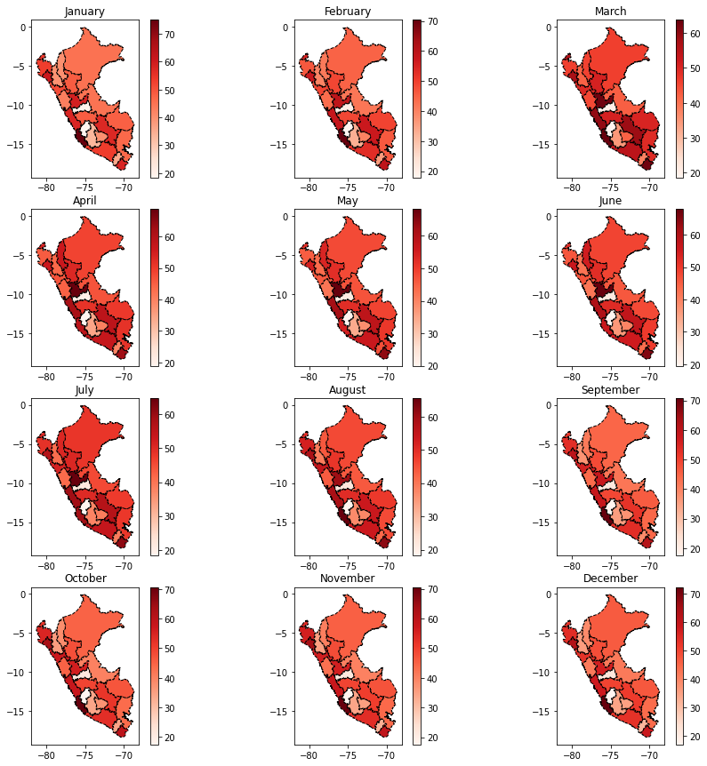

from IPython.display import display, HTML
display(HTML(data="""
<style>
div#notebook-container { width: 95%; }
div#menubar-container { width: 65%; }
div#maintoolbar-container { width: 99%; }a
</style>
"""))
import matplotlib.pyplot as plt
import numpy as np
import pandas as pd
import geopandas as gpd
# Get data of labor
sex_work = pd.read_stata( r'../_data/8_trab_sex_20.dta' )
sex_work[ 'dpt_code' ] = sex_work.cod_ubigeo.str[ :2 ].copy()
sex_work[ 'prov_code' ] = sex_work.cod_ubigeo.str[ :4 ].copy()
# Sex work
women_work = sex_work[ sex_work.sex == 'Mujer' ].copy().reset_index( drop = True )
---------------------------------------------------------------------------
FileNotFoundError Traceback (most recent call last)
~\AppData\Local\Temp\ipykernel_12132\522330428.py in <module>
1 # Get data of labor
----> 2 sex_work = pd.read_stata( r'../_data/8_trab_sex_20.dta' )
3 sex_work[ 'dpt_code' ] = sex_work.cod_ubigeo.str[ :2 ].copy()
4 sex_work[ 'prov_code' ] = sex_work.cod_ubigeo.str[ :4 ].copy()
5
C:\Anaconda\lib\site-packages\pandas\io\stata.py in read_stata(filepath_or_buffer, convert_dates, convert_categoricals, index_col, convert_missing, preserve_dtypes, columns, order_categoricals, chunksize, iterator, compression, storage_options)
2002 ) -> DataFrame | StataReader:
2003
-> 2004 reader = StataReader(
2005 filepath_or_buffer,
2006 convert_dates=convert_dates,
C:\Anaconda\lib\site-packages\pandas\io\stata.py in __init__(self, path_or_buf, convert_dates, convert_categoricals, index_col, convert_missing, preserve_dtypes, columns, order_categoricals, chunksize, compression, storage_options)
1149
1150 self._native_byteorder = _set_endianness(sys.byteorder)
-> 1151 with get_handle(
1152 path_or_buf,
1153 "rb",
C:\Anaconda\lib\site-packages\pandas\io\common.py in get_handle(path_or_buf, mode, encoding, compression, memory_map, is_text, errors, storage_options)
793 else:
794 # Binary mode
--> 795 handle = open(handle, ioargs.mode)
796 handles.append(handle)
797
FileNotFoundError: [Errno 2] No such file or directory: '../_data/8_trab_sex_20.dta'
# get data from lima
women_work[ 'month' ] = pd.to_datetime( women_work.month , format = '%B' ) \
.dt.strftime( '%m' ) \
.astype( int )
# Sort by department and month
women_work.sort_values([ 'dpt_code', 'month'], inplace = True )
# Get the total number of women workers by dpt
dpt_women_work = women_work.groupby( [ 'dpt_code', 'month'], as_index = False )[['empl']] \
.sum() \
.rename( columns = {'empl' :'women_empl'})
# Sort by dpt code and month
dpt_women_work.sort_values([ 'dpt_code', 'month'], inplace = True )
df2 = dpt_women_work.groupby( ['dpt_code'],as_index = False )[['women_empl']].mean()
Shapefile#
dpt_shp = gpd.read_file( r'../_data\INEI_LIMITE_DEPARTAMENTAL\INEI_LIMITE_DEPARTAMENTAL.shp' )
df3 = dpt_shp.merge( df2, left_on = 'CCDD', right_on = 'dpt_code' )
df3.plot( column='women_empl', cmap='Reds', figsize=(20, 20), linestyle='--',
edgecolor='black',
legend = True)
<AxesSubplot:>
fig, ax = plt.subplots(figsize=(20, 20))
df3.plot( ax = ax,
column='women_empl',
cmap= 'Reds',
figsize=(20, 20),
linestyle='--',
edgecolor='black',
legend = True,
scheme = "User_Defined",
classification_kwds = dict( bins = [ 20000, 40000, 60000, 100000 ] ),
legend_kwds = dict( loc='upper left',
bbox_to_anchor=(1.01, 1),
fontsize='x-large',
title= "Number of Employers",
title_fontsize = 'x-large',
frameon= False )
)
<AxesSubplot:>
df3[ df3.CCDD != "15" ].plot( column='women_empl', cmap='Reds', figsize=(20, 20), linestyle='--',
edgecolor='black',
legend = True)
<AxesSubplot:>
df4 = sex_work.groupby( ['dpt_code', 'month', 'sex'], as_index = False )[['empl']].sum() \
.pivot( index = [ 'dpt_code', 'month' ] , columns = 'sex',values='empl') \
.reset_index()
df4
| sex | dpt_code | month | S.I. | Hombre | Mujer |
|---|---|---|---|---|---|
| 0 | 01 | January | 472 | 5108 | 2043 |
| 1 | 01 | February | 441 | 4951 | 2059 |
| 2 | 01 | March | 423 | 4459 | 2056 |
| 3 | 01 | April | 314 | 3211 | 1811 |
| 4 | 01 | May | 297 | 3049 | 1642 |
| ... | ... | ... | ... | ... | ... |
| 295 | 25 | August | 1654 | 16885 | 7425 |
| 296 | 25 | September | 1689 | 17886 | 7549 |
| 297 | 25 | October | 1812 | 19223 | 7751 |
| 298 | 25 | November | 1882 | 19758 | 7933 |
| 299 | 25 | December | 1848 | 19304 | 8087 |
300 rows × 5 columns
df4[ 'prop_wom' ] = ( df4.Mujer * 100 / df4.Hombre )
df5 = dpt_shp.merge( df4, left_on = 'CCDD', right_on = 'dpt_code' )
fig, axis = plt.subplots( nrows = 4, ncols= 3, figsize = ( 15, 15 ) )
idx = 0
for i in range( 4 ):
for j in range ( 3 ):
ax = axis[ i ][ j ]
month = df5.month.unique()[ idx ]
df6 = df5[ df5.month == month ]
df6.plot( column='prop_wom',
cmap='Reds',
linestyle='--',
edgecolor='black',
legend = True,
ax = ax
)
ax.set_title( month )
idx = idx + 1

from textwrap import wrap
# Inverting colour map
cmap = plt.cm.OrRd
fig, ax = plt.subplots(figsize=(20, 20))
df6.plot( ax = ax,
column='prop_wom',
cmap= cmap,
figsize=(20, 20),
linestyle='--',
edgecolor='black',
legend = True,
scheme = "User_Defined",
classification_kwds = dict( bins = [ 20, 30, 40, 50, 100 ] ),
legend_kwds=dict( loc='upper left',
bbox_to_anchor=(1.01, 1),
fontsize='x-large',
title= "Women Proportion",
title_fontsize = 'x-large',
frameon= False )
)
<AxesSubplot:>
df6.loc[ (df6.NOMBDEP == 'LIMA'), 'prop_wom' ] = np.nan
fig, ax = plt.subplots(figsize=(20, 20))
df6.plot( ax = ax,
column='prop_wom',
cmap= cmap,
figsize=(20, 20),
linestyle='--',
edgecolor='black',
legend = True,
scheme = "User_Defined",
missing_kwds= dict(color = "#DADADB",),
classification_kwds = dict( bins = [ 20, 30, 40, 50, 100 ] ),
legend_kwds=dict( loc='upper left',
bbox_to_anchor=(1.01, 1),
fontsize='x-large',
title= "Women Proportion",
title_fontsize = 'x-large',
frameon= False )
)
<AxesSubplot:>
fig, ax = plt.subplots(figsize=(20, 20))
dpt_shp.plot( ax = ax )
<AxesSubplot:>

dpt_shp['country'] = 'PERU'
ctr_shp = dpt_shp.dissolve( by = 'country')
fig, ax = plt.subplots(figsize=(20, 20))
ctr_shp.plot( ax = ax )
<AxesSubplot:>
Generating grids
# Import a Shapefile
dist_shp = gpd.read_file(r'../_data/shape_file/DISTRITOS.shp')
dist_shp["geometry"][0]
# Keep only smp geometry
smp_geo = dist_shp.query( "`PROVINCIA` == 'LIMA' & `DISTRITO` == 'SAN MARTIN DE PORRES'").geometry
# Generating grids
xmin, ymin, xmax, ymax= smp_geo.total_bounds
smp_geo.crs
<Geographic 2D CRS: EPSG:4326>
Name: WGS 84
Axis Info [ellipsoidal]:
- Lat[north]: Geodetic latitude (degree)
- Lon[east]: Geodetic longitude (degree)
Area of Use:
- name: World.
- bounds: (-180.0, -90.0, 180.0, 90.0)
Datum: World Geodetic System 1984
- Ellipsoid: WGS 84
- Prime Meridian: Greenwich
import shapely.geometry
# how many cells across and down
n_cells = 30
cell_size = (xmax-xmin)/n_cells
# projection of the grid
crs = 4326
# create the cells in a loop
grid_cells = []
for x0 in np.arange(xmin, xmax+cell_size, cell_size ):
for y0 in np.arange(ymin, ymax+cell_size, cell_size):
# bounds
x1 = x0-cell_size
y1 = y0+cell_size
grid_cells.append( shapely.geometry.box(x0, y0, x1, y1) )
cell = gpd.GeoDataFrame(grid_cells, columns=['geometry'],
crs=crs)
import matplotlib.pyplot as plt
smp_geo.plot()
<AxesSubplot:>
ax = smp_geo.plot(markersize=.1, figsize=(12, 8), )
plt.autoscale(False)
cell.plot( ax = ax , facecolor="none", edgecolor='grey')
ax.axis("off")
(-77.13292090574993,
-77.03921094324997,
-12.043987454999982,
-11.931614754999881)